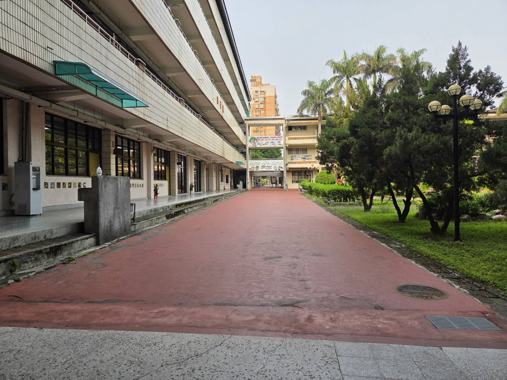
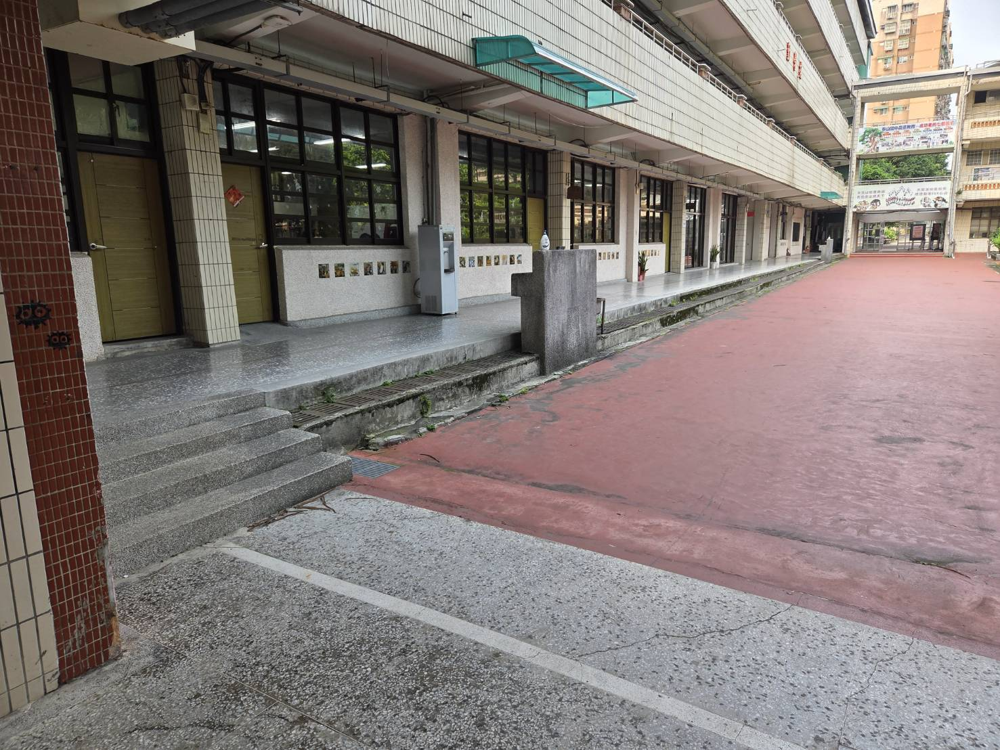

大窼溪是流經泰山區的重要水文，自古以來便與在地居民的生活息息相關。清澈的溪水不僅滋養了這片土地，豐富了沿岸的自然生態，更是見證泰山從早期農業社會發展至今的歷史軌跡。
在泰山國中的校本課程中，大窼溪是一本活生生的自然與社會教科書。我們帶領學生走出教室，認識這條家鄉的生命之河，了解水資源保育的重要性，並從中培養愛鄉愛土的情懷。
依傍著大窼溪與平頂山，泰山國中擁有得天獨厚的寧靜學習環境。不遠處溪水流動的潺潺聲，彷彿是大自然演奏的白噪音，能夠洗滌喧囂，幫助學生靜下心來專注學習。
漫步在寬敞明亮的校園走廊，或是穿梭在充滿綠意的紅磚步道上，伴隨著微風與水文的氣息，讓「讀書」不再只是枯燥的文字吸收，而是一種與自然共鳴的靈感啟發。

